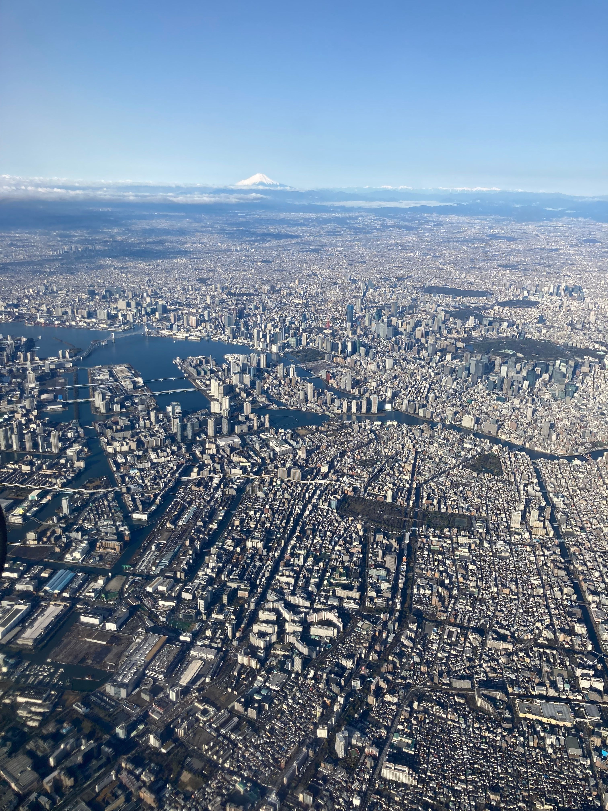
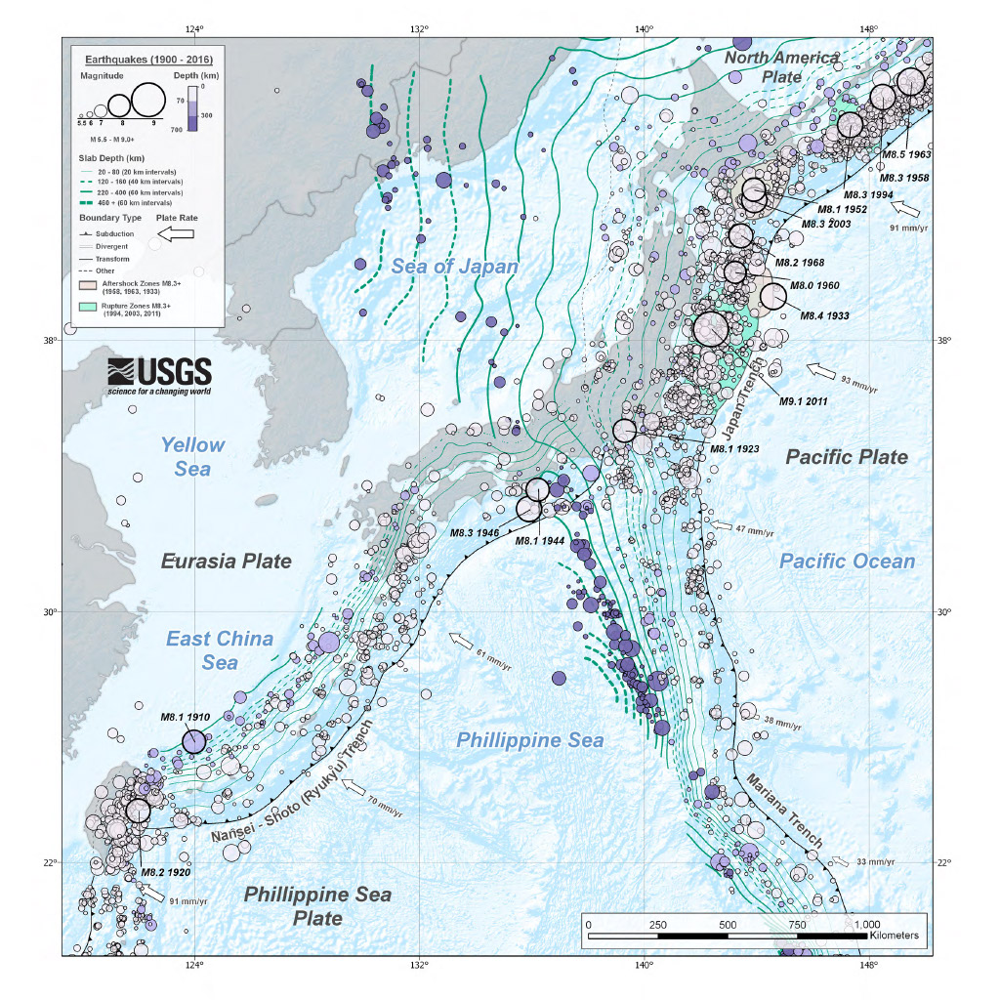
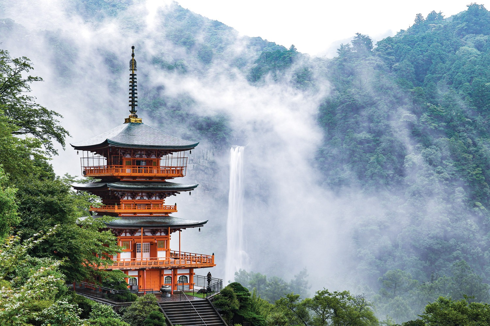
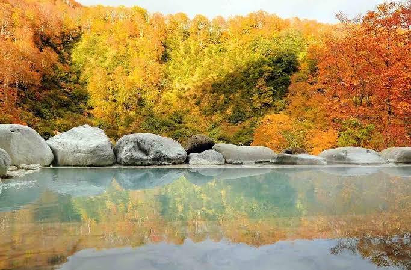

Japan is famous for its seismic activity, with about 1,000 tremors of varying magnitudes occurring each year (Hurst et al., 2026). This large number is only possible due to Japan's incredibly miraculous geological positioning, sitting along 4 tectonic plates: the North American Plate, the Pacific Plate, the Eurasian Plate, and the Philippine Sea Plate. Figure 1, shown below, is a map of the tectonic plates and boundary types provided by the USGS (2016). It features the plate names and locations. Figure 2, provided by the Incorporated Research Institutions for Seismology (2017), shows these plates in motion, introducing some of the effects associated with tectonic movement: namely earthquakes, volcanoes, and tsunamis.
Tectonic Plate Boundaries and Historical Earthquakes Around Japan (1900–2016)

Note. From Earthquakes (1900–2016): Japan and Vicinity [Map], by U.S. Geological Survey, 2016 (https://earthquake.usgs.gov/earthquakes/tectonic/images/japan_tsum.pdf). In the public domain.
Seismic Activity Along Japan's Subduction Zones Since 2011
Note. Screenshot from Japan—Earthquakes & Tectonics [Video], by EarthScope Consortium, 2017, YouTube (https://www.youtube.com/watch?v=5BHnf1wGD9w&t=49s). Animation by Jenda Johnson, written and directed by Dr. Robert F. Butler.
Japan is a small island country. While there are many disasters that upend and change the land, it happens gradually. That said, Japan's mining industry accounted for only 1% of employment in 2024 (National Minerals Information Center, n.d.). The ores reported in the 2024 Japan mineral report (National Minerals Information Center, n.d.) consisted of a small handful of ores locally extracted from the water and outlying rock, like Iodine, bromine, limestone, gold, and silver. However, the bulk of Japan's mineral output comes from imported ores, which they then process to produce more refined and specialty metals. The most economically beneficial production comes from the sale of Iron, steel, and precious stones and metals. These metals are then exported predominantly to the United States and China. This focus on outsourcing their materials aids in the preservation of Japan's environmental status but also places minor cost pressure due to the lack of domestic resources.
Japan Mineral and Metal Exports by Trading Partner (HS92, 2024)
Note. From Japan Exports by Partner and Product (HS92, 2024) [Data visualization], by The Observatory of Economic Complexity, n.d. (https://oec.world/en/visualize/treemap?dataset=hs92&show=partner&flow=export&country=jpn&product=0.05.13.14.15&time=2024).
Japan is an Island Archipelago, meaning it consists of many underwater mountains that give it shape. The majority of the area that makes up the Japanese Archipelago is: Sakhalin, the Kuril Islands, Hokkaido, Honshu, Shikoku, Kyushu, and the Outlying Japanese Islands. Honshu refers to Japan's main body and features peaks such as Mount Fuji, Izuga-take, Joujuga-take, Mishimaga-take, and many others. Within Honshu, you can find the Kii Mountain range, which is revered for its deep cultural impact, sacred sites, and historical pilgrimage routes, stands as the, "the deepest block of mountains in Japan" (Britannica Editors, 1998). "The mountains are of strong relief, being broken by deep valleys, sharp ridges, and steep declivities" (Britannica Editors, 1998). Due to their proximity to the subducting Philippine Sea Plate near the Nankai Trough (Incorporated Research Institutions for Seismology, 2017). the Kii Mountains ranges with ridges from 5,561 feet (1,695 m) to 4,403 feet (1,342 m), featuring peaks like Mount Hakken, reaching 6,283 feet (1,915 m)(Britannica Editors, 1998).
Kumano Kodo Pilgrimage Trail

Note. From "The Mysterious Kii Peninsula" [Photograph], by Tanabe City Tourism Promotion Division, October 17, 2022, IM First Class (https://www.imfirstclass.com/en/stories/1890/). Copyright 2022 by Tanabe City Tourism Promotion Division.
These mountains are not numerous; they're lush. Many of the plant life and foliage found in this range are of the tropical variety due to the proximity to the water, but namely it's place at the frontlines against typhoons and weather fronts. The Kii Mountains feed into river systems such as the Kinokawa (Yoshino), Kumano (Shingū), Kushida, and Miyagawa rivers, which support research on flood preparation and also provide safe water sources. The MLIT among otherthings manages flood conrol projects. Managing water is crucial for life, especially safe water.
This area is home to many religious practices, many of which have ancient ties. Many of the shrines in these mountains housed travelers, leading to seven notable trail routes. They, "are the Nakahechi (the main route), Ohechi, Kohechi, Iseji, the Choishi michi Route that links the sacred Shingon Buddhist Koyasan to the Kumano Shrines, and the Yoshino & Omine route." (Division, 2024)
Japan is known for its earthquake tremors. These tremors are directly tied to the movement of the 4 tectonic plates below. Many of these earthquakes, however, never stop at just shaking. Due to Japan's island nature, tsunamis are an earthquake's best friend. Figure 6 is a Japanese-issued earthquake and Tsunami safety video that discusses how these disasters start, with real-life examples of their occurrences:
Preparing for Tsunamis Japanese PSA ~English subtitles~
Note. Screenshot from Preparing for Tsunamis ~English subtitles~ [Video], by Japan Meteorological Agency, 2023, YouTube (https://www.youtube.com/watch?v=jxSPbdgQOh8).
As of 2026, the Smithsonian Institution states that Japan is home to 168 Pleistocene and 116 Holocene volcanoes (Smithsonian Institution Global Volcanism Program, n.d.). The Smithsonian Institution's webpage lists volcanoes that erupted as far back as BCE and additionally lists their landforms, with 182 of the 284 total volcanoes listed as Composite (stratovolcanoes). The most significant of these are Mount Unzen (Unzendake), Mount Fuji (Fujisan), Mount Asama (Asamayama), and Mount Aso (Asosan), known for their deadly composite eruptions. The Aira (Sakurajima) and Kikai Calderas are caldera volcanoes best known for their geological influence on Japan, as well as their historical magnitude. The National Oceanic and Atmospheric Administration (NOAA) also has a form providing additional information on Japan's current and historical volcanos, along with their casualties. Many listings feature damage reports if available. One such volcano recorded on NOAA's webpage is Unzendake: A historical Complex Volcano in Kyushu, Japan, that erupted on the 21st of May 1792, and caused an estimated 15,000 deaths. However, the vast majority of the deaths weren't caused by the volcano itself rather the tsunami that followed and the mountain avalanche that came shortly before. (National Oceanic and Atmospheric Administration, n.d.)
Japan is under constant Volcanic surveillance due to its tendency to trigger domino effects, with the Japan Meteorological Agency providing hourly updates on volcanic danger amid other predictable and preventable hazards. However, despite this, the volcanic nature of the Japanese region allows for their famous hot springs.
Milky-White Hot Springs at Hotel Hanabun in Myoko Kogen, Niigata Prefecture

Note. From Rare Milky-White Hot Springs on Foot of Autumn Mountain; Hotel Hanabun in Niigata Pref. Captures Hearts With Its Views, Hot Springs, Food [Photograph], by H. Arai, October 2, 2024, The Japan News ((https://japannews.yomiuri.co.jp/features/travel-spots/20241002-214501/).